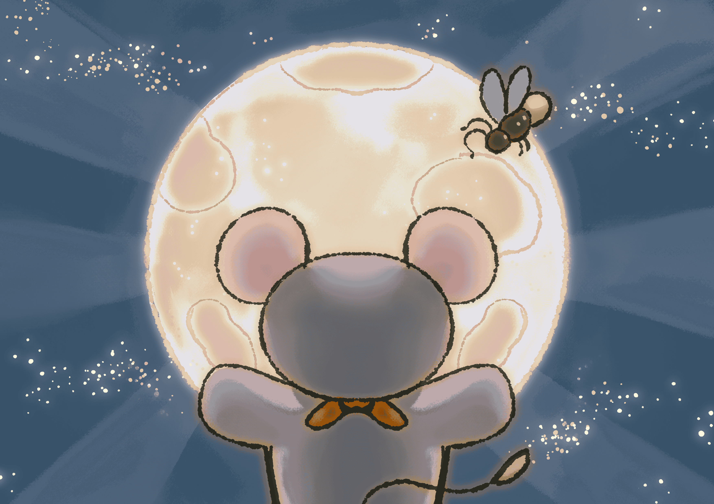
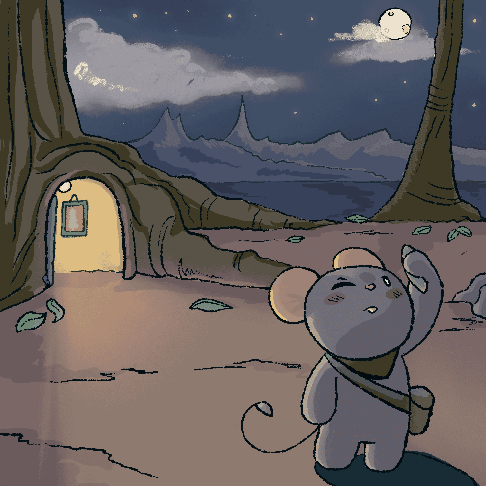

🌙 Mauro y la Luna
Un cuento interactivo con Realidad Aumentada

Un cuento interactivo con Realidad Aumentada
Autor: Equipo dinamita
Modelado 3D: Sofi y Miguel
Historia: Ingrid
Arte: Lucy y Chucho
Desarrollo: Raquel
